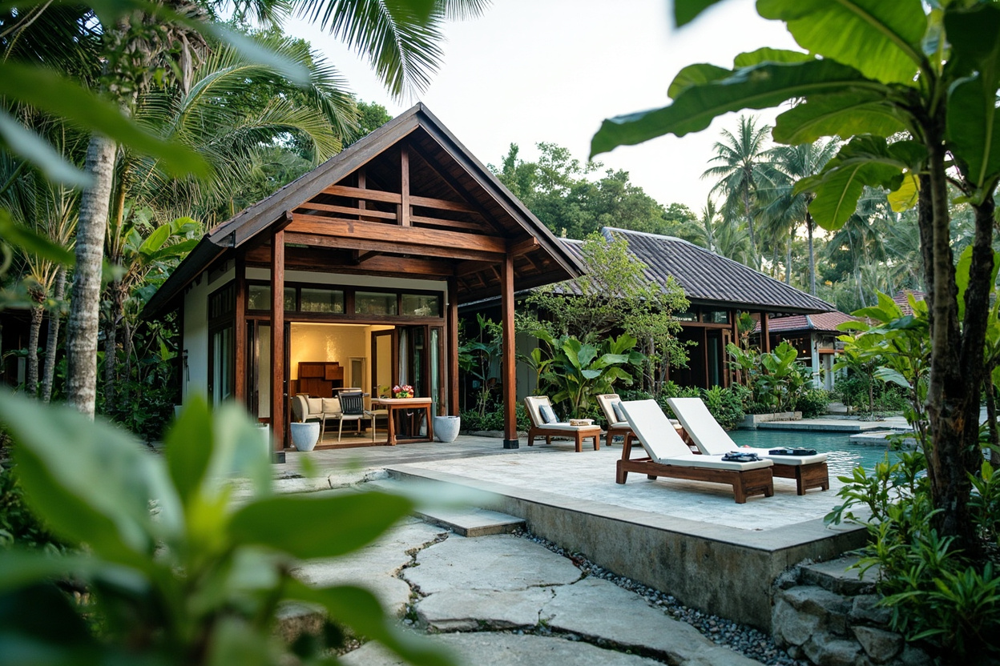
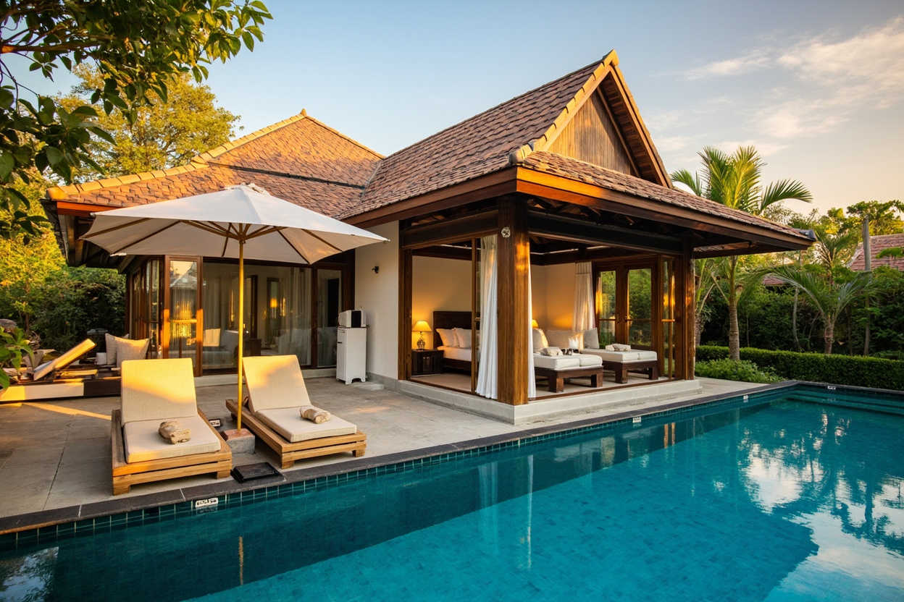

Sea: 30°C — perfect for swimming. Brief afternoon rain on most days (warm, not cold). Off-peak pricing, fewer crowds, better rates.

5-min walk to Bai Kem — one of the world's most beautiful beaches. Near Sunset Town, JW Marriott, New World, and Regent dining. The villa.

Ong Lang Beach — 4-min walk to sand. Private pool villa, kitchenette, kids club, chocolate hour. 5 min to Grand World. Safari is 30–40 min away.
North coast (Ganh Dau + Cua Can): Sheltered by the island — calmer water than the south. Best snorkel spot in July.
Hon Thom Island (Aquatopia day): The beach there has calmer water than Bai Kem — worth a snorkel if you have time.
Skip distant island tours (Mong Tay, Hon Dua): July's wind and rougher seas make the 45–60 min boat rides unpleasant, and snorkel quality drops with choppy water.
Gear: Bring snorkel masks if you have them. Rent on-site for ~100k VND/person/day. Kids will need properly fitted masks — buy in HK or at WinMart+ on island.
16:10 dep HKG T2 · Arrive 18:05 PQC. Pre-book Grab × 2 or minivan. ~35 min to Sun Tropical Village.
5-min taxi from villa. Right on the beach, great seafood, diverse menu. Open daily.
📍 Open in MapsEveryone exhausted. Villa pool or beach if energy allows. Early start tomorrow.
No rush. 9–10am is the realistic departure time for this group.
5-min walk from villa. One of the world's most beautiful beaches — white sand, clear water, calm for kids. Swim, sandcastle, paddle.
📍 Open in MapsTổ 8 Đường Cao Tốc, Khu Phố 6, An Thới — right outside your villa gate. Family com (rice dishes), local, cheap, genuinely good. Delivery available: [contact on request].
📍 Open in MapsJet ski, kayak, banana boat — rental stands right on the beach. Negotiate on the spot. Kids aged 5–10 will love this. Banana boat = guaranteed laughter.
🏄 Jet ski · Kayak · Banana boatSeafood, beach view, cold drinks, relaxed atmosphere. The friend specifically recommended this for dinner. Multiple other beachfront options along Bãi Khem if you want to wander.
📍 Open in MapsPrivate car to An Thới Cable Car Station (~25 min from villa).
World's longest sea-crossing cable car — 7,899m over open ocean. 20 minutes of panoramic ocean views. Bring a light jacket — breezy and AC. Book morning slot for best weather.
🚠 World's longest overwater cable car 📍 An Thới Station · Open in MapsSlides, splash zones, wave pools. Perfect for ages 5–10. Outdoor rides (Exotica Theme Park) for the older kids. Lunch at island food stalls.
🎢 Slides · Lazy river · Splash zonesWalk the Santorini-style Mediterranean streets. Ice cream, photos, browse the shops. This is a highlight — don't skip it on the way back.
📸 Instagram photos · Café5pm sunset water show on Kiss Bridge. 100k/vé. Buy via Tixgo.vn (cheaper than door). Show plays at golden hour — genuinely impressive.
🎭 Via Tixgo.vn · 100k/vé 📍 Kiss Bridge · Open in MapsVietnam's first creative seaside night market in Sunset Town. 4pm–midnight daily. Street food to upscale options. Perfect after the Kiss Bridge walk.
📍 Sunset Town · Open in MapsKhu Phố 6, An Thới · Authentic local seafood. The friend specifically recommended this as a local experience — no frills, fresh, and genuinely good. 0342 756 666.
📍 Open in MapsEscape the midday heat. Pool at the villa. Everyone rests before the big show tonight.
🏊 Villa poolLate afternoon stroll. Mediterranean streets, ice cream, sunset at the bridge. The 5pm golden hour light is perfect.
🌅 Best sunset view on the islandBalearic-inspired beachfront venue on Bãi Trường. Mediterranean cuisine, cocktails, stunning infinity pool + ocean views. ~200k VND taxi each way. TableCheck reservation recommended.
📍 Open in MapsMain event of the trip. Outdoor water + light show on Kiss Bridge. Buy 2-person combo for better discount via Tixgo.vn. Arrive 20:30 for decent seats — general admission only.
🎭 Must-see · Buy via Tixgo.vn 📍 Kiss Bridge, Sunset TownLast swim at one of the world's most beautiful beaches. 5-min walk from villa.
🏖️ Don't skip it~10–15 min by Grab or pre-arranged car. Drop bags, explore the villa.
🛏️ Private pool villaInside Movenpick Villas. Vietnamese + international cuisine. High quality, zero travel needed. TripAdvisor 4.6/5 · 3,227 reviews.
📍 Open in MapsSettle into the villa. Kids swim, adults decompress. Beach is 4-min walk from your villa.
🏊 Private pool · 🏖️ Ong Lang BeachOng Lang Beach. Tapas, cocktails, live music, sunset views. TripAdvisor 4.9/5 — remarkably high for any restaurant. Part of the Movenpick/Accor ecosystem. Walkable from your villa.
📍 Open in MapsMs. Ngoan's car is already arranged for the day. Head north to Ganh Dau first (~30–40 min from Movenpick), then to Safari.
🚗 Arrange night before ([contact on request])North Phu Quoc's best snorkeling. Calm, clear, shallow coral reefs — perfect for kids. Vibrant coral, sea fans, schools of tropical fish. The north coast is sheltered so water stays calm even in July. Bring reef-safe sunscreen.
🤿 Shallow reef · Crystal clear water 👨👩👧👦 Kid-safe · Calm bay 📍 Ganh Dau · Open in MapsRight next to the snorkeling area. Beachfront, grilled seafood, pepper crab. Very convenient — you're already there. AC restaurant with beautiful sea views.
🦐 Grilled seafood · Beachfront 📍 Open in MapsOpen-range safari tram — tigers, elephants, lions up close. Walking zones + petting area for younger kids. All 5 kids will lose their minds. Well-shaded, AC restaurants on site. 30 min from Ganh Dau to Safari.
🦁 Open 8am–5pm · Afternoon = still excellent 🦋 Safari tram · Petting zoo 📍 VinSafari · Open in Maps~35 min drive. Everyone tired and happy. Pool / beach walk before dinner.
🏊 Recovery · Beach walk5 min from Movenpick. Opens 5pm. Newer, cleaner than Bach Dang. Very easy evening — no long drive needed. Great for tired kids after a big day.
🌙 Opens 5pm · Near Movenpick 📍 Open in MapsPaddle through the jungle-lined Cua Can River. Calm water, beautiful mangroves, eagles and kingfishers overhead. TripAdvisor 5-star reviews for family-friendly tours. Kids aged 5+ can do tandem kayak with a parent. English-speaking guides. Hotel pickup from Movenpick area.
🛶 Tandem kayak · Ages 5+ welcome 🌿 Jungle river · Wildlife spotting 📍 Cua Can River · Open in MapsBack from the kayak by midday. Eat at Lang Chai — no travel needed, AC, kids-friendly. TripAdvisor 4.6/5.
🍜 On-site · No travelFinal swim in your private pool. Pack in the afternoon. Sunset walk on Ong Lang Beach — last one.
🏊 Private villa pool 🏖️ Last Ong Lang sunsetOng Lang Beach. Organic, sustainably sourced Vietnamese cuisine. Upscale eco-resort setting. Beautiful outdoor seating. TripAdvisor 4.4/5 · 1,554 reviews. Dress up — last night of the trip.
📍 Open in MapsPre-book Grab or Ms. Ngoan for airport transfer. PQC is ~20–25 min from Movenpick.
UO599 departs 10:40. Allow 90 min for international check-in. Buy fish sauce and black pepper at Duty Free if time allows.
✈️ Arrive PQC 8:30amPhu Quoc · July 17–24, 2026